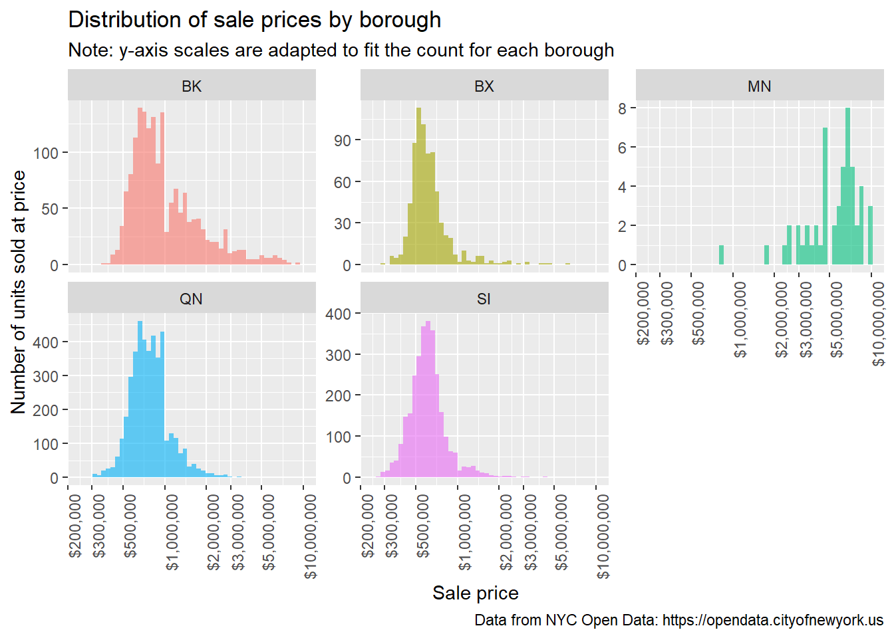
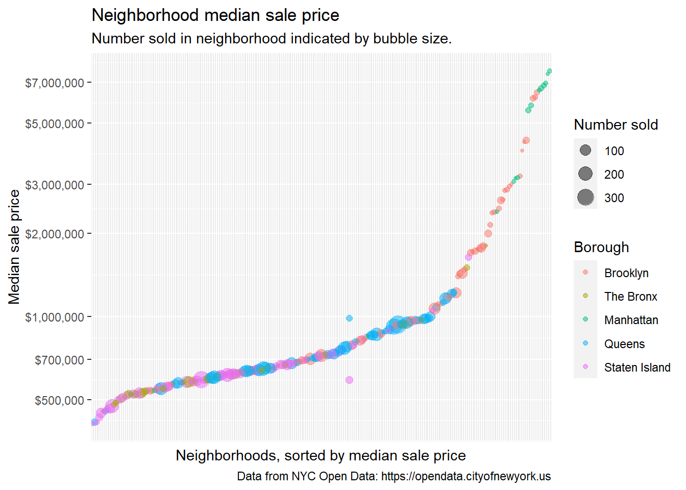
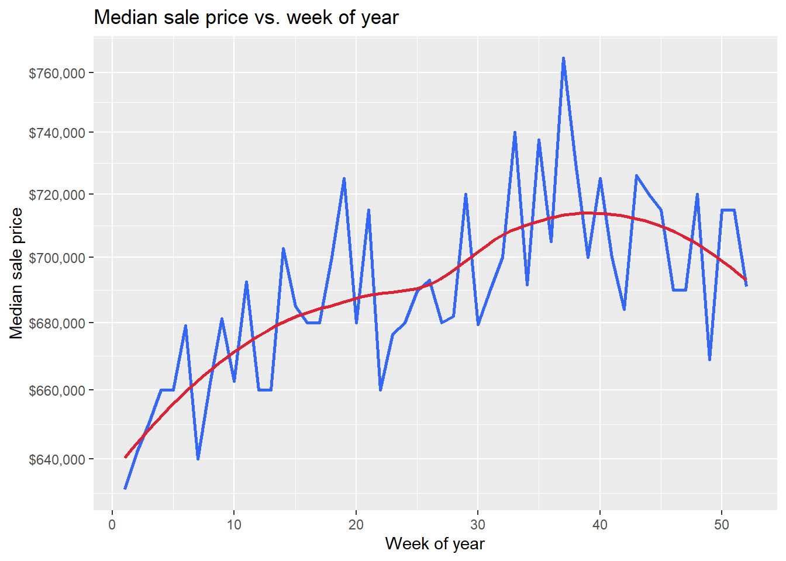
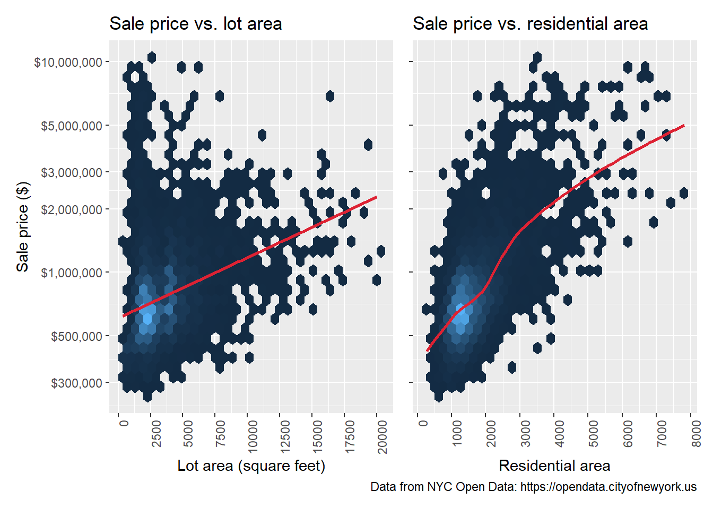
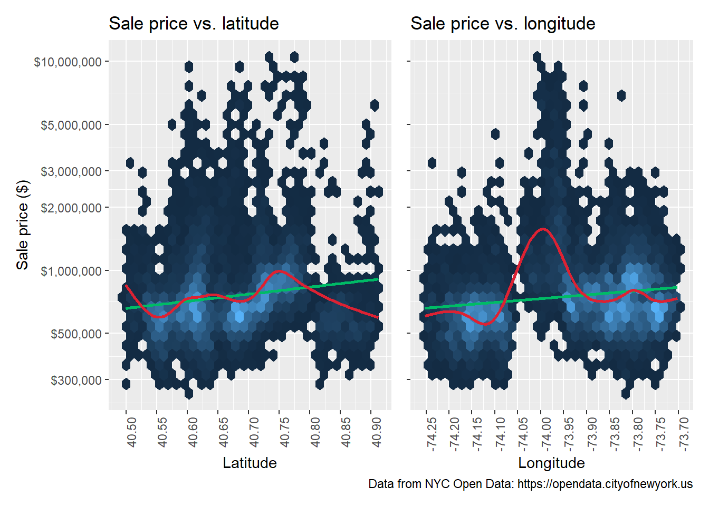
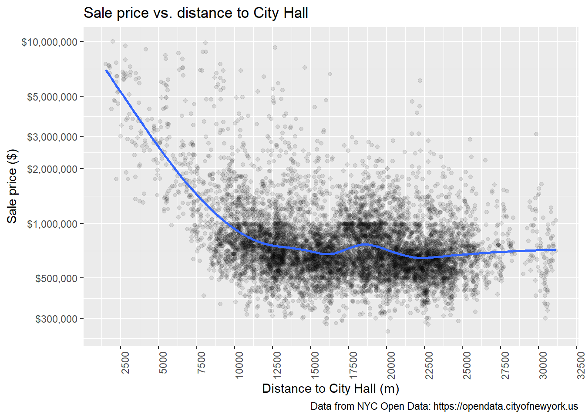
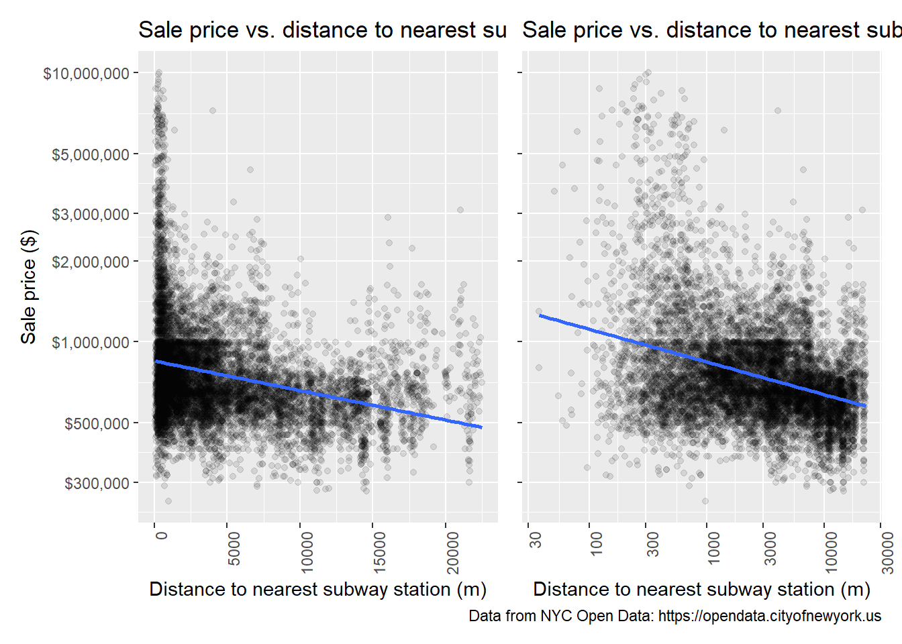
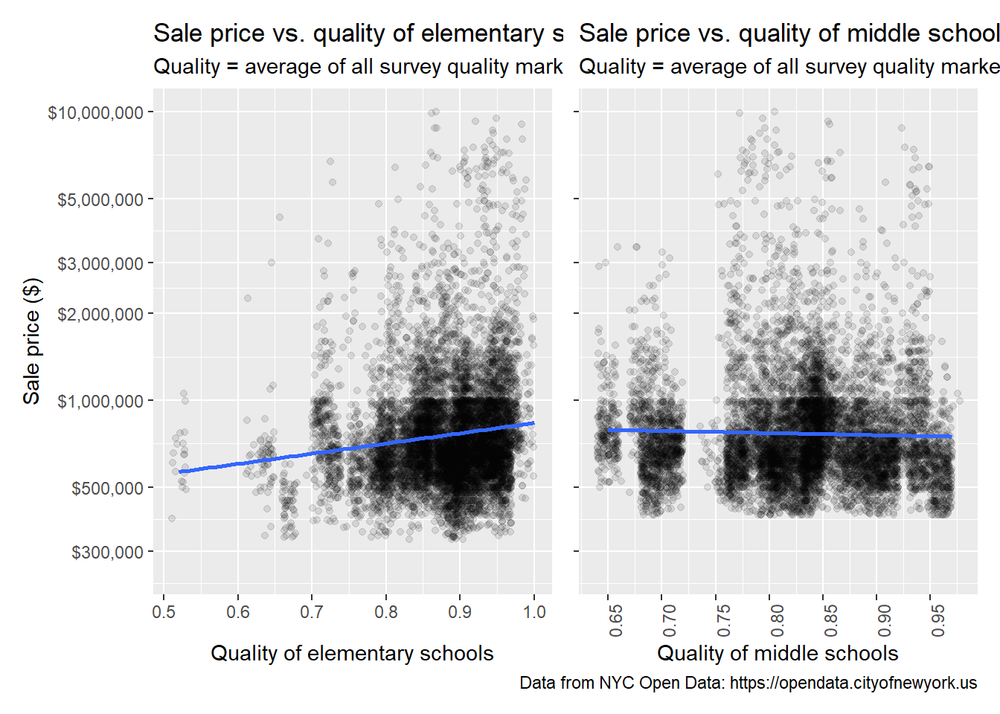
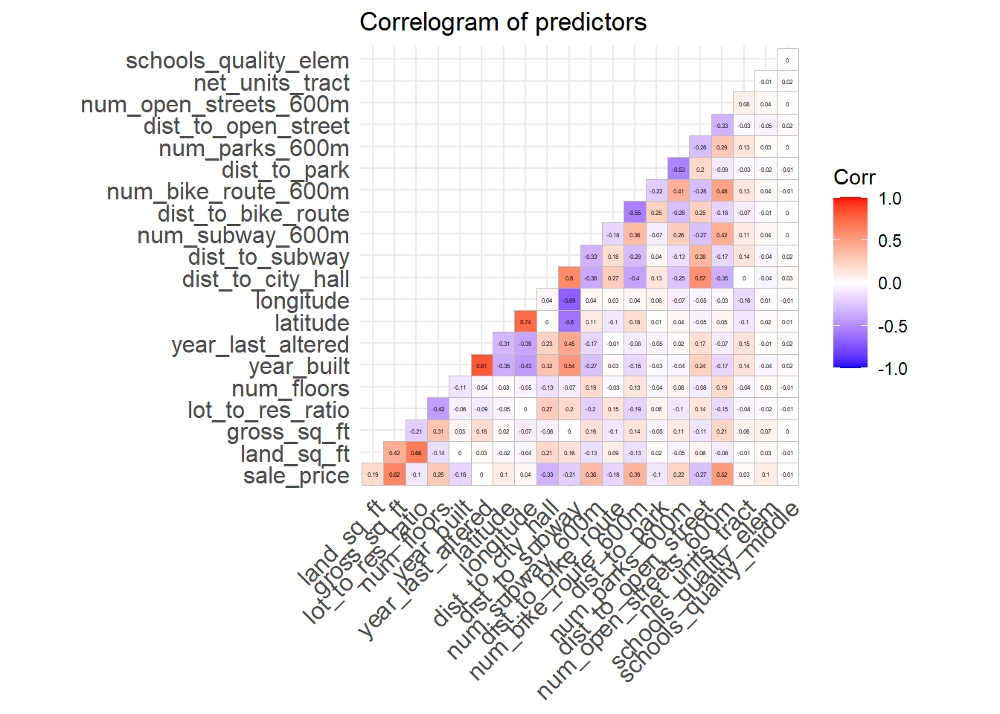

Exploratory data analysis
Splitting the data
We split the data into training and test sets before exploring it further. Splitting the data at this point prevents data leakage, a phenomenon where decisions are made that bias the model to the data on hand such that it does not generalize well to future data.
The training set consists of 3/4 of the data, with the remaining 1/4 set aside for testing. The exploratory analysis below is based soley on the training set.
Distribution of prices by borough
A histogram of sale prices (below) for each borough confirms that Manhattan’s sale prices are higher than other boroughs, but the number of single-family homes sold in Manhattan is very small.

Prices at the neighborhood level
Neighborhood-level median prices can give us an idea of how prices are distributed across the city at the local level.

The bubble graph above shows that there may be two (or more) distinct market segments represented in the data:
a “mainstream” market of neighborhoods with high sales volume and prices under $1 million, located in Queens, Staten Island, The Bronx, and parts of Brooklyn
a “high-end” market of neighborhoods with fewer sales and prices over $1 million, located in Manhattan and parts of Brooklyn and Queens
The segments are shown by the larger bubbles in the mainstream market and by the “elbow” in the graph, where the slope changes abruptly around $1 million. While this potential segmentation of the market will not be addressed in this project, it is useful to keep in mind while interpreting the model results.
Price vs. the predictors
For brevity, just the highlights from the full data exploration and visualization are shown in this section.
Date of sale
Seasonality is a strong feature of the median sale price. According to national data, prices are lowest in the first and last months of the year, and highest during the summer months.1 This trend is reflected in our data. (The offset of the peak from the summer months to early fall likely coincides with the post-COVID “return to office” around this time.) Note that it is a nonlinear trend, which along with other nonlinear trends will influence the types of models that will be selected in the model building section.

Lot and building area
As expected, prices increase along with both lot size and the square footage of the building on the lot. The price between price and lot size is basically linear above a certain threshold. But as shown on the graph of price vs. lot size (below left), lots under 2500 sq ft are found across the full range of prices. Presumably, location matters for small lots.
In contrast, there is a strongly nonlinear relationship between price and residential area. This finding corresponds to another finding (not shown) that homes with more floors tend to sell for higher prices.

Latitude and longitude
While the relationship between price and latitude shows some distinct nonlinearity, the relationship between price and longitude is especially pronounced, with a prominent hump around the middle of the range. This hump presumably represents the more expensive neighborhoods in Manhattan and Brooklyn, while other parts of the city to the east and west have dramatically lower home prices.

Distance to City Hall
The relationship between price and distance to city hall is highly nonlinear. The shape of this graph is very striking: prices fall quickly as distance increases, but level off around 10-12 km. A “shelf” at a sale price of $1,000,000 is visible here. The number of homes above that sale price is 2,054, while the number at or below that sale price is 10,763.

Distance to nearest subway
Of all the variables representing the distance to the nearest amenity, the distance to the subway has the most pronounced and clear relationship to price. This relationship is graphed on an untransformed x-axis and a log-transformed x-axis for comparison. Almost all homes over $2 million are near subway stations, and the trend is for lower prices as distance increases.
Relationships between price and other distance amenities were similar, but less pronounced. Notably, the relationship between price and distance to parks was basically flat, and the maximum distance was fairly short – NYC parks are be plentiful and well-distributed around the city.
The relationships between price and the counts of amenities nearby were similar: the more amenities nearby, the higher the price tends to be. Again, parks were the exception: the relationship was flat.

School quality
Visualizing school quality yields both expected and unexpected results. Elementary school quality is positively associated with prices and almost all homes sold for $2 million and over have better elementary schools nearby. But neither of these relationships hold true for middle school quality.

Correlation plot
Correlation plot of all variables. None of the variables are correlated with each other at a level higher than 0.80 (though year built and year last altered are at 0.80). Excessive correlation (which can violate model assumptions and lead to poor results) will not be an issue in the modeling process.
